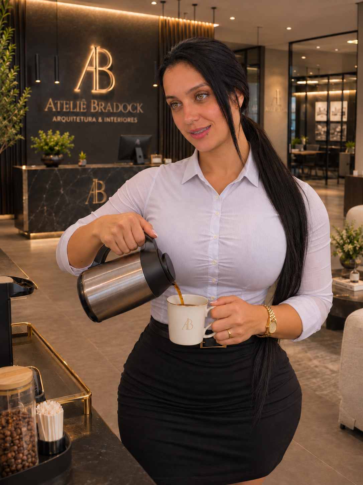
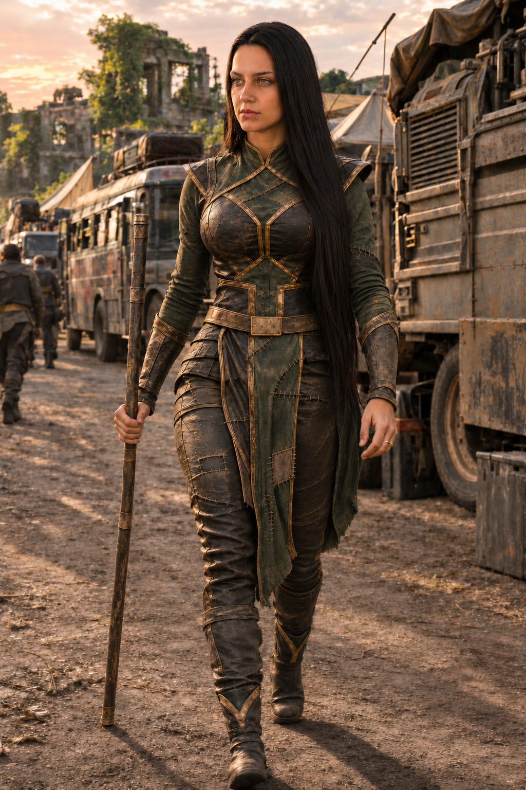
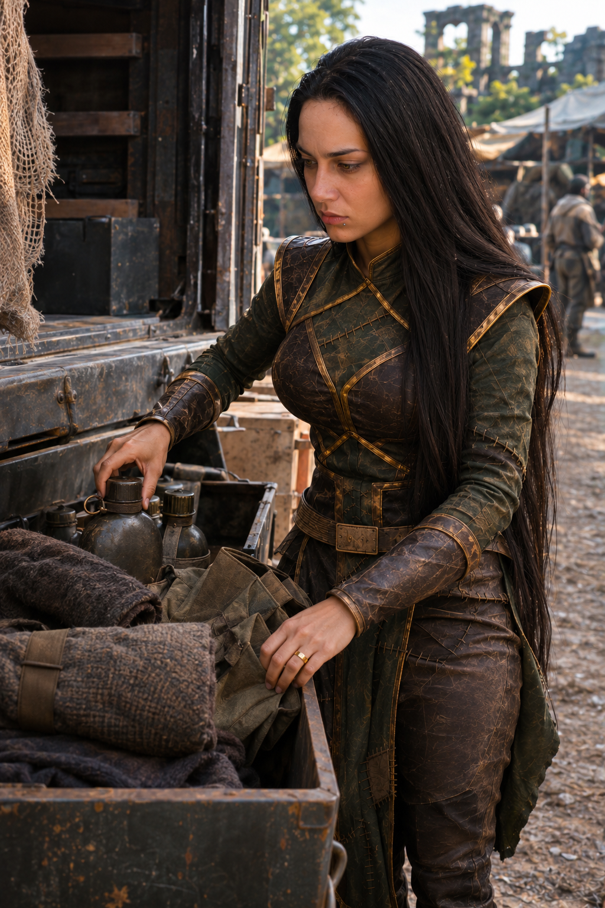
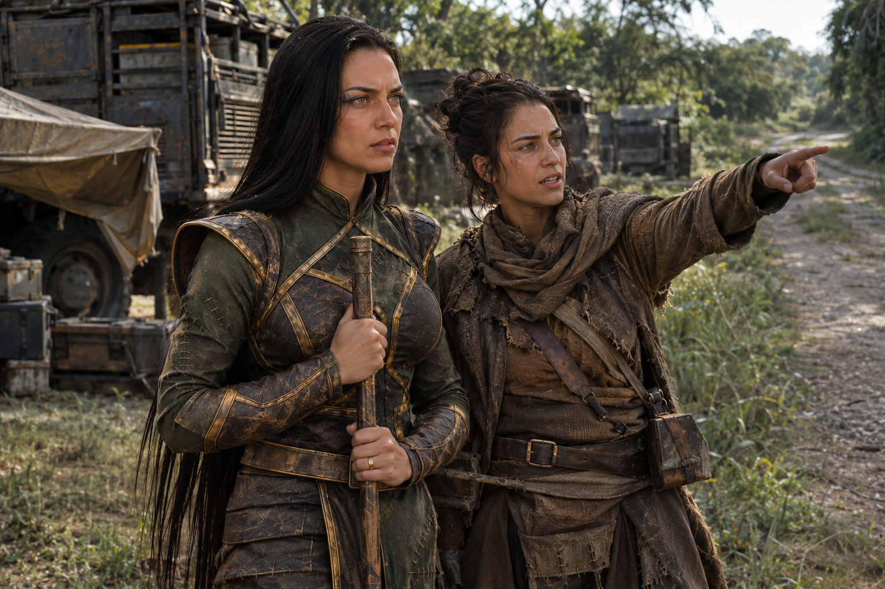
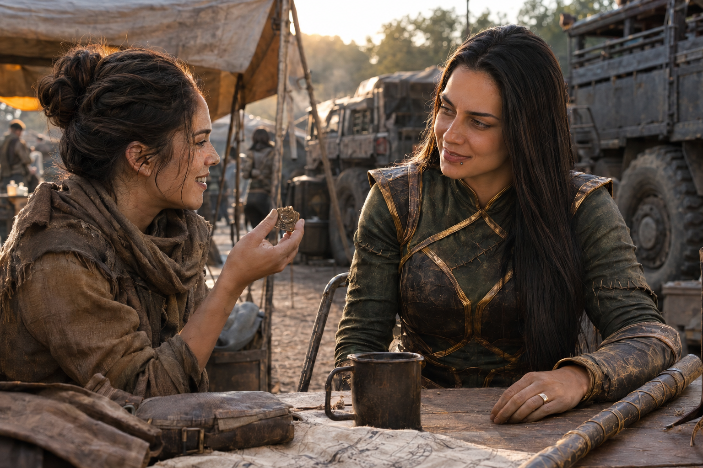

ÁLBUM 01 // 10 REGISTROS Antes do Dia D 
01 // MEMÓRIA AM-04 // RECONSTRUÇÃO VISUAL Uma pausa no Ateliê Braddock AMPLIAR ↗ 02 // MEMÓRIA AM-05 // ANTES DO DIA D Um dia de trabalho AMPLIAR ↗ 03 // MEMÓRIA AM-06 // ANTES DO DIA D Uma noite de evento AMPLIAR ↗ 04 // MEMÓRIA AM-07 // ANTES DO DIA D Entre luzes e conversas AMPLIAR ↗ 05 // MEMÓRIA AM-08 // RETRATO PESSOAL Um instante guardado AMPLIAR ↗ 06 // MEMÓRIA AM-09 // RETRATO PESSOAL Antes de tudo mudar AMPLIAR ↗ 
07 // MEMÓRIA AM-10 // PRESENTE Uma chegada ao acampamento AMPLIAR ↗ 
08 // MEMÓRIA AM-11 // PRESENTE Preparação para a próxima saída AMPLIAR ↗ 
09 // MEMÓRIA AM-12 // PRESENTE Uma rota compartilhada AMPLIAR ↗ 
10 // MEMÓRIA AM-13 // PRESENTE Uma pausa entre tarefas AMPLIAR ↗ REGISTROS SEM DATA // 02 REGISTROS Período não confirmado 01 // MEMÓRIA AM-02 // RECONSTRUÇÃO VISUAL Registro pessoal AMPLIAR ↗ 02 // MEMÓRIA AM-03 // RECONSTRUÇÃO VISUAL Retrato preservado AMPLIAR ↗